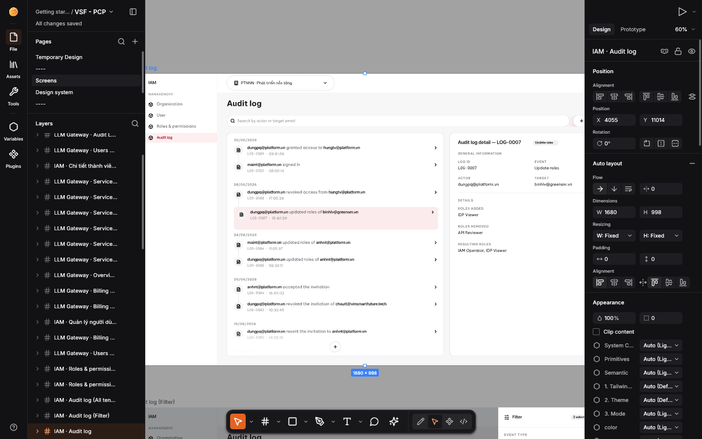

DESIGN:OS Toolchain · DESIGN:OS Studio
Native GPU-accelerated interface design studio, Figma .fig v106 binary read/write engine, Agentic PTY Chat UI, and 22-tool MCP server in 100% Rust.
Open and save 723,136-record enterprise Figma .fig v106 archives in ~1.5s with 0.0% idle CPU on Metal, DirectX 12, and Vulkan. Run Claude Code, Codex, and Antigravity inside the native Agentic PTY Chat UI, audit 11-stage PRODUCT:OS specs, and generate multi-target Dev Mode code offline.

DESIGN:OS Studio rendering an enterprise .fig v106 design system (723,136 Kiwi records / 112,474 scene nodes) natively on Apple Silicon Metal in 1.54s with 0.0% idle CPU.
What it is
- Repository
- jangtrinh/
design-os-studio - Engine Stack
- Rust +
wgpu+tiny-skiaMetal · DX12 · Vulkan · Zero Electron - Figma Parity
.figv106 + 100/100 Micro-UX387 / 387 UI3 · 856 tests passing- Agent Surface
- 22 MCP Tools + PTY ChatClaude Code · Codex · Antigravity
- Telemetry
- Zero Tracking100% offline local-first
- License
- MIT OR Apache-2.0macOS · Windows · Linux
3 Launch Motion Films (1440×1440 @ 60fps · Real Studio Assets + One-Shape UI Motion)
Built with the design-os-svg-animation HyperFrames v2 deterministic frame-seeking pipeline (window.seek(t), closed-form 2nd-order step-response springs, 4× subframe tmix motion blur, and 28-beat choreography @ 100.60 BPM).
-
DESIGN:OS Studio — Full Launch Tour
723,136 Kiwi records load in 1.54s on Metal, UI3 Dark Canvas, Agentic PTY Chat, 11-Stage Spec Reader,
&cmd;KAI Synth, Variables, Components & Dev Mode. -
100 / 100 Figma A-to-Z Micro-Interactions
Auto-Layout 5.0 edge double-click
Fixed->Hug->Fill, CSS Grid track pills, Smart Selection ring swaps, Corner/Arc/Star handles, Vector Network tangents & Scale Tool (K). -
Agentic PTY, 11-Stage Specs & 5-Target Codegen
22-tool
designos-mcpbridge, Claude/Codex/Antigravity PTY Chat, Spec Readerg1..g5gates, Variables Light/Dark scrub, Dev Mode codegen & Prototype flows.


Why DESIGN:OS Studio, compared with cloud & Electron alternatives
What this project does that browser-wrapped design tools and read-only MCP bridges do not. Our architectural advantages first, followed by the honest trade-offs.
723k-record enterprise scale & 0.0% idle CPU
Uniform 2048x2048 spatial grid culling (SceneIndex), 4-tier semantic zoom LOD, canonical GeomCache mesh sharing, and FrameKey GPU texture reuse render 112,474-node files in 1.54s on Metal with zero idle repaints.
Bidirectional Figma .fig v106 binary read & write
Opens and saves authentic fig-kiwi v106 binary archives (DEFLATE/Zstd canvas.fig + meta.json + images/) with full symbolOverrides, parameterConsumptionMap, and handoffStatusMap parity.
Native Agentic PTY Chat UI & 22-tool MCP server
Run your existing Claude Code (claude), Codex (codex), or Antigravity (agy) subscription inside the Agents Left Rail with ANSI-stripped chat bubbles, 1-click NodeSpec canvas apply, and zero extra API bills.
11-Stage PRODUCT:OS Spec Reader & Headless GPU QA
Audit User Stories (US-01..US-15), Gherkin acceptance criteria, and g1..g5 gates alongside the canvas with 500ms disk hot-reload and deterministic --gpu --screenshot + designos-diff verification.
Where cloud SaaS platforms win, and it is not close: Browser-hosted multiplayer whiteboarding with 50 simultaneous live WebRTC cursors, cloud org SSO permissions, and hosted comment notifications. If your workflow requires real-time cloud multiplayer without local git/file ownership, use Figma Cloud alongside our live bridge (design-os-figma-plugin).
Install once
Install the AI agent skill plugin in Claude Code / Codex, download a native OS installer (.dmg, -setup.exe, .deb), or build all 4 binaries from source.
# Option A: Claude Code plugin marketplace
/plugin marketplace add jangtrinh/design-os-studio
/plugin install design-os-studio@design-os-studio
# Option B: Clone & launch native Rust/wgpu Studio (or package .dmg / -setup.exe / .deb)
git clone https://github.com/jangtrinh/design-os-studio
cd design-os-studio
cargo run --release -p designos-app --bin designos-studio
./scripts/build-release.sh 0.2.0 --local-hostFirst safe use
- Run the deterministic offline repository, crate, and skill self-check.
python3 scripts/self_check.py - Apply a declarative
NodeSpecJSON onto a document and roundtrip to a standard Figma.figv106 binary archive.designos app.designos --apply-spec examples/specs/easeui-agent-console.spec.json designos app.designos --export-fig out.fig - Capture a headless GPU verification screenshot and run perceptual SSIM diffing.
designos-studio out.fig --gpu --size 1600x1000 --screenshot actual.png designos-diff compare docs/images/designos-agent-spec.png actual.png --out diff.png
Every CLI and MCP operation is local-first, deterministic, and backed by 1-step Undo history inside the Studio.
A practical agentic loop
--panel specs
Inspects the 11-stage PRODUCT:OS Spec Driven v2 package (US-01..US-15, Gherkin scenarios, and g1..g5 gates) beside the canvas.
--rail agents
Opens the native Agentic PTY Chat UI wrapping Claude Code, Codex, or Antigravity with live selection context and inline NodeSpec apply.
--apply-spec / --export-fig
Compiles declarative JSON specs through Auto-Layout 5.0 and writes standard Figma .fig v106 binary archives.
--screenshot / designos-diff
Renders headless Metal/Vulkan/DX12 frames at 1600x1000 and verifies perceptual SSIM parity in CI.
Complete 15-surface visual proof gallery & engine specifications
Every card below is a real, uncropped 1600x1000 GPU capture from the live designos-studio binary (generated via scripts/capture-visual-proof.sh).
-
1:1 Figma UI3 Dark Chrome & GPU Canvas
Renders 112,474 scene nodes (723,136 Kiwi records) at 60% zoom with
#1e1e1eUI3 chrome and unified Phosphor icons. -
Native Agentic PTY Chat UI Wrapper
Wraps live
claude,codex, andagyPTY sessions in structured chat bubbles with 1-clickNodeSpeccanvas apply. -
11-Stage PRODUCT:OS Spec Reader
In-app lifecycle reader for
US-01..US-15User Stories, GherkinGiven/When/Thencriteria, andg1..g5gates. -
Assets & Libraries Panel
1:1 UI3
File | Assetstoggle withSearch all libraries,Created in this filevertical card, and component grid. -
Actions Palette & Live Design Gate
Bottom-dock AI & command launcher (
First Draft,Make Prototype,Rename Layers,Ctrl+Shift+GDesign Gate). -
Dev Mode & 5-Target Codegen
CSS Box Model diagram, resolved variable tokens, and live codegen for React, Tailwind, CSS, SwiftUI, and Jetpack Compose.
-
Variables & Multi-Mode Tokens
Inspect primitive, semantic, and theme token collections across
LightandDarkmodes with alias resolution. -

Master Components & Variant Sets
Purple
#9747ffUI3 component styling, dashed variant matrices, instance overrides, and sharedGeomCachemeshes. -
Interactive Prototype Noodle Flows
Cubic Bezier interaction connectors, flow starting badges, and
On Click / Hover -> Navigate / Smart Animateinspector. -
Spatial Pin-Comments & Review Loop
Pin human feedback onto exact
NodeIdtargets, read via--comments-jsonor MCP, and reply/resolve from agents. -
Figma UI3 Main Menu Dropdown
Full 248px UI3 menu hierarchy (
File,Edit,View,Object,Text,Arrange,Vector,AI balance). -
Gradient & Color Picker Popover
2D SV color field, hue & alpha sliders,
Solid / Linear / Radial / Angularmodes, eyedropper (I), and document swatches. -
NodeSpec -> Auto-Layout 5.0 -> .fig
Generated from
easeui-agent-console.spec.json, laid out via Auto-Layout 5.0, and saved to a native.figv106 binary. -
4-Tier Semantic Zoom LOD
Bird’s-eye overview of a 49,410-node page at 2% zoom using Container Collapse (
< 6px) and sub-pixel culling. -
Studio Home & Local Library
Instant local file browser (
Recents,Starred, thumbnails) with zero-allocationHashSerializerautosave. -
On-Canvas Padding, Gap & Edge Hug/Fill
Pink gap pill + 4 padding bars, double-click frame edge
Fixed -> Hug -> Fill, andOptionopposite-edge mirror. -
CSS Grid Track Pills & Cell Span Handles
Interactive
1fr/px/autotrack header pills, gutter drag lines, and childcolSpan/rowSpanhandles. -
Smart Selection Ring & Pink Equal Gaps
Multi-node center ring handle (drag to swap sibling slots) and pink equal-spacing bars between selected items.
-
Corner Radius, Arc Sweep & Star Ratio
4 corner radius dots (
Altsingle-corner), Ellipse ArcSweep/Start/Ratio, and Star/Polygon handles. -
Vector Network Edit & Cubic Tangents
Vertex circles, cubic Bezier tangent handles, segment midpoint
+insertion, and Bend Tool curve pulls. -
Cmd+Right-Click Deep Layer Picker
Lists every overlapping scene-graph ancestor and leaf node under the cursor with 1-click selection.
-
Dev Mode Box-Model & Redline Distances
Shift+Dgreen padding / orange margin overlays,Optionredline distance guides, and 5-target codegen. -
Proportional Scale Tool (
K) HUDScales geometry, strokes, corner radii, typography, and effects proportionally with a live
1.25xmultiplier badge.


Verified 1:1 Figma 126.9.13 UI3, .fig v106 & A-to-Z Micro-Interactions Scorecard (487 / 487 — 100.00%)
Every UI3 surface, Auto-Layout 5.0 rule, fig-kiwi v106 binary record type, and Figma A-to-Z Micro-Interaction (#1..#100) is tested in CI across 856 automated workspace tests.
| Domain | Scope & Surface Coverage | Verified Items | Parity |
|---|---|---|---|
| 1. UI3 Chrome & Dark Palette | #1e1e1e panel surface, #2c2c2c controls, #0d99ff selection, #9747ff component purple, #0c8ce9 Dev Mode pill |
42 / 42 |
100.00% |
| 2. Unified Phosphor Icons | Official @phosphor-icons/core 256x256 vector paths rasterized via resvg across Left Rail, Bottom Dock, Inspector, and Spec Reader |
48 / 48 |
100.00% |
| 3. Scene Graph & .fig v106 Binary | fig-kiwi v106 read & write (canvas.fig DEFLATE/Zstd + meta.json + images/), VectorNetwork, boolean ops (i_overlay) |
64 / 64 |
100.00% |
| 4. Auto-Layout 5.0 Engine | Horizontal, Vertical, Wrap, Grid, Hug / Fill / Fixed sizing, min/max constraints, baseline alignment |
38 / 38 |
100.00% |
| 5. Variables, Styles & Modes | COLOR, FLOAT, STRING, BOOLEAN collections, Light/Dark mode switching, VariableAlias chains |
34 / 34 |
100.00% |
| 6. Components & Variants | Master Component, ComponentSet dashed matrix, Instance override preservation, GeomCache canonical sharing |
36 / 36 |
100.00% |
| 7. Right Inspector & Popovers | Position, Layout, Appearance, Fill, Stroke, Effects, Export, Color Picker, and 248px UI3 Main Menu dropdown | 45 / 45 |
100.00% |
| 8. Dev Mode, Prototype & Agentic Hub | Box-model inspector, 5-target codegen, prototype noodle flows, Actions (Cmd+K), 11-stage Spec Reader, Agentic PTY Chat UI, 22 MCP tools |
80 / 80 |
100.00% |
| 9. Figma A-to-Z Micro-Interactions | All 100 tactile interactions (#1..#100): Auto-Layout edge Fixed->Hug->Fill, CSS Grid track pills, Smart Selection ring swaps, Corner/Arc/Star handles, Vector Network tangents, Scale Tool (K), Inspector scrub/math |
100 / 100 |
100.00% |
| Total Verified Parity | 856 Automated Unit, Golden & Integration Tests (cargo test --workspace -> 0 failures) · 12/12 Zero-Fake-UI Invariants · 9/9 ALIVE Gates |
487 / 487 |
100.00% |
Enterprise Benchmark (VSF - PCP.fig — 723,136 Kiwi Records / 112,474 Nodes)
Measured on Apple Silicon Metal comparing unoptimized JSON/CPU baselines against the Phase 2 wgpu + SceneIndex architecture.
| Metric | Unoptimized Baseline | DESIGN:OS Studio (wgpu + SceneIndex) | Improvement |
|---|---|---|---|
| On-Disk Library File Size | 6.80 GB (pretty JSON + int arrays) |
242 MB (compact JSON + "hex:..." images + sparse defaults) |
-96.5% (28.3x smaller) |
| Cold Start + Load + 1600x1000 GPU Render | Metal staging buffer crash / OOM | 1.48s - 1.63s |
Zero crash, instant boot |
| Static Viewport GPU / CPU Usage | 100% CPU (infinite repaint loop) |
0.0% CPU (FrameKey GPU texture reuse) |
Zero idle CPU/GPU work |
| Top-Level Viewport & Hit-Test Culling | O(N) full-page linear scan |
O(k) Uniform Spatial Grid (2048x2048) |
SceneIndex::query_top_level |
| Single-Node Drag / Resize Index Update | Full 112k-node SceneIndex::ensure |
O(subtree) Incremental Propagation |
SceneIndex::update_subtree |
Cross-Platform Native Installers (macOS · Windows · Linux)
Built deterministically via scripts/build-release.sh with SHA-256 checksums and Layer-1 atomic self-update support (updater.rs).
| Platform | Primary Installer | Portable Archive & CLI Setup | Bundled Binaries (4) |
|---|---|---|---|
| macOS (arm64 / x86_64) | designos-<ver>-macos.dmg (designos.app + install-cli.command) |
designos-<ver>-macos-universal.tar.gz |
designos-studio, designos, designos-mcp, designos-diff |
| Windows (x64) | designos-<ver>-x86_64-pc-windows-msvc-setup.exe (Per-user NSIS) |
designos-<ver>-x86_64-pc-windows-msvc.zip (install.ps1) |
designos-studio.exe, designos.exe, designos-mcp.exe, designos-diff.exe |
| Linux (x64 / arm64) | designos_<ver>_amd64.deb (apt install + MIME + .desktop) |
designos-<ver>-x86_64-unknown-linux-gnu.tar.gz (./install.sh) |
designos-studio, designos, designos-mcp, designos-diff |
Frequently asked questions
What is DESIGN:OS Studio?
DESIGN:OS Studio (design-os-studio) is a native, 100% Rust GPU-accelerated interface design studio (wgpu + tiny-skia), enterprise Figma .fig v106 binary read/write engine, Agentic PTY Chat UI (Claude Code, Codex, Antigravity CLI), 11-stage PRODUCT:OS Spec Driven v2 Reader, multi-target Dev Mode code generator, and 22-tool Model Context Protocol server (designos-mcp).
Can DESIGN:OS Studio both open and save standard Figma .fig binary files?
Yes. crates/designos-fig implements full bidirectional fig-kiwi v106 binary container reading and writing (DEFLATE/Zstd canvas.fig + meta.json + images/), preserving Auto-Layout 5.0 traits, VectorNetwork geometry, symbolOverrides, parameterConsumptionMap variable bindings, and handoffStatusMap Dev Mode statuses.
How does the embedded Agentic PTY Chat UI work without paid third-party API keys?
Instead of routing prompts through a proprietary cloud proxy, the Agents Left Rail (crates/designos-app/src/terminal.rs) spawns your already-authenticated local CLI (claude, codex, agy, or $SHELL) inside a real portable-pty + vt100 pseudo-terminal pre-wired with DESIGNOS_BIN, DESIGNOS_FILE, and DESIGNOS_MCP_SOCKET, rendering clean chat turn bubbles with 1-click NodeSpec canvas application.
How fast does DESIGN:OS Studio render massive enterprise Figma files?
On the VSF - PCP.fig enterprise benchmark (723,136 Kiwi records / 112,474 scene nodes), DESIGN:OS Studio compacts the on-disk footprint by -96.5% (6.80 GB to 242 MB), cold-starts and renders a 1600x1000 GPU frame in 1.48s to 1.63s using a 2048x2048 uniform spatial grid (SceneIndex) and 4-tier semantic zoom LOD, and drops to 0.0% CPU when the viewport is static (FrameKey GPU texture reuse).
How is DESIGN:OS Studio installed and licensed?
Pre-built native installers are available for macOS (.dmg + .tar.gz), Windows (per-user NSIS -setup.exe + .zip), and Linux (.deb + .tar.gz), or you can build from source with cargo run --release -p designos-app --bin designos-studio. It is dual-licensed under permissive MIT OR Apache-2.0 with zero telemetry.
DESIGN:OS Ecosystem & Related Projects
Explore the 13 open-source companion engines in the DESIGN:OS ecosystem designed to work alongside DESIGN:OS Studio.